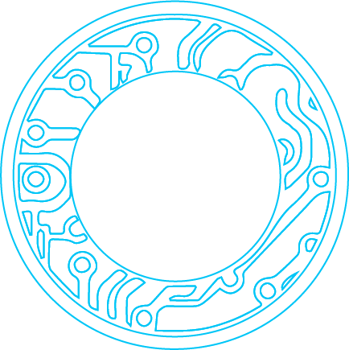

Concept
This research project aims to understand how people who aren't "tech-savvy" react to emerging
technologies.
It was inspired by the potential of transhumanism* and the
increasing
discussions
about privacy and ethics in the tech world.
To do so, I created a fictional company and built its web presence, utilising questionnaires
and
interviews to gather data about "potential customers".
Finally, I wrote an article about my analysis and presented it at CIDI
- 8th Information
Design
International Conference [in Portuguese].
* Transhumanism: The project of modifying the human species through any emerging technology, including genetic engineering, digital technology, and bioengineering.
The Company
Aeon Cybernetics' main value is to provide high-tech body enhancements to the masses, in an easy,
practical and affordable way.
The 6 products offered on their website are all based on real and working projects that
provide
from convenience and health to completely new senses.
Visual Identity
The company had to convey the ideas of trust, reliability and futuristic innovation while representing a study about privacy and ethics in the tech industry.
Logo
The logo subtly expresses the ideas of surveillance, sophistication and integrity.
The sans-serif lightweight typography echoes other startups' identities, so the company be quickly recognized as part of the innovation and tech context.
The blue gradient excels when applied on the dark background of the website, making the letter "O" resemble an eye.
Website
For the website's visual identity I created 3 moodboards and layouts to express different concepts:

1. Innovative and futuristic, inspired by cyberpunk and science fiction
2. familiar and trustworthy, based on hospitals and health-related websites

3. minimalist and product-focused, Inspired by startups’ product pages.
I wanted Aeon to have a futuristic appeal, so I chose the first layout and created line-based illustrations to represent all products and scenarios described.
Web Presence
To assure the company's credibility, it was essential to build a trustworthy web presence.
To
do
so,
I created an official website and pages on social media.
The Website
The website's main goal was to make the users sign up to try one of the products. I designed the pages based on 3 concepts:
1. Desire
The "Home" and "Products" pages showcase where Aeon's products improve
everyday life, to increase the user's desire for these products.

2. Credibility
The page "About" shows the origins of the company and "News" shows both corporate articles and real news around the world that validate the possibility of the products being real.

3. Trust
The pages "How it Works" and "F.A.Q" give the users more information about the products and the process so they feel safe enough to sign up for the trial.
In addition to these, there's also a "Sign Up" page that gathers initial data via a questionnaire the users fill when signing up for the trial.
Research
For the research, I gathered information from 4 sources: the questionnaire, Facebook, Google Analytics and qualitative interviews.
Questionnaire
Trough the signup questionnaire I could trace a profile of who wanted these products, what and why they wanted it.
Google Analytics
I analyzed the website usage data to better understand how interested in the content were the visitors.
I posted on the company’s page a few of the news available on the website. to make sure the project would reach a diverse audience, I used paid promotions, with the first publication reaching 2.634 users.
Interviews
Finally, I contacted and interviewed both people who liked the publications on Facebook and people who applied on the website, to understand the human factor behind the numbers.
Data Analysis
Is there a public interest on these products?
Yes, in parts. The Facebook data shows a very high engagement level, but a lower than
average click rate.
This could indicate that despite bein interested in the subject, user are not willing
to try the products, a trend also nocited on the interviews.
What are they most interest in?
The products chosen and the reasons for choosing them were diverse. The answers included:
Self-Development
“I feel that as a human I must overcome the limits previous estabilished to my existence”
Health
“My family has a history of heart problems, diabetes and cancer, so I worry a lot about my health”
Practicality
“Not having to depend on the GPS is very interesting”
What are their doubts and fears?
Company Legitimity
“I did my research to know if you were legitimate because that was my biggest concern, to see if you were a legitimate company.”
Access
“But how can I try those products if I live in Camocim - Ceará, I can’t sweetheart”
Colateral effects
“I’m afraid my body won’t adapt to the process and that if I want to remove the implant it won’t be possible”
There were no questions about privacy or any ethical aspects of the company.
Learnings
This was a very complex project that I will be forever grateful for doing.
As
a
graduation
thesis, it allowed me to practice everything I've learned so far.
Having to do everything by myself also gave
me the resilience
to fix the problems I encountered along the way.
The end result was not a reliable scientific research, only indications of a
common profile and behaviour. However, I’m fascinated by this subject and look foward
to
exploring it further.
Still have questions?
contact me